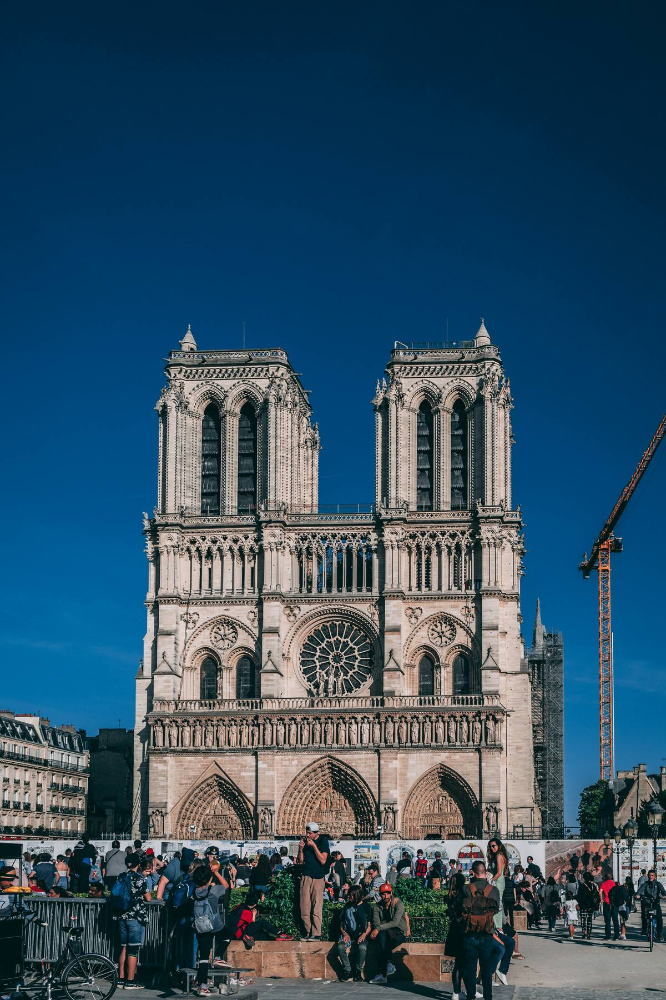
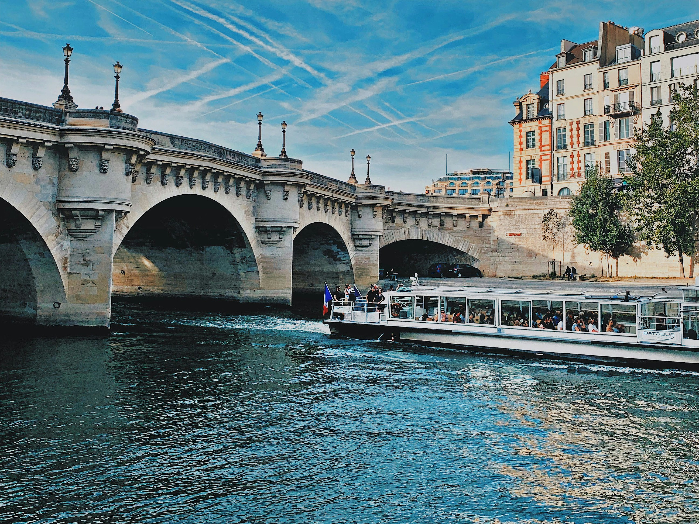
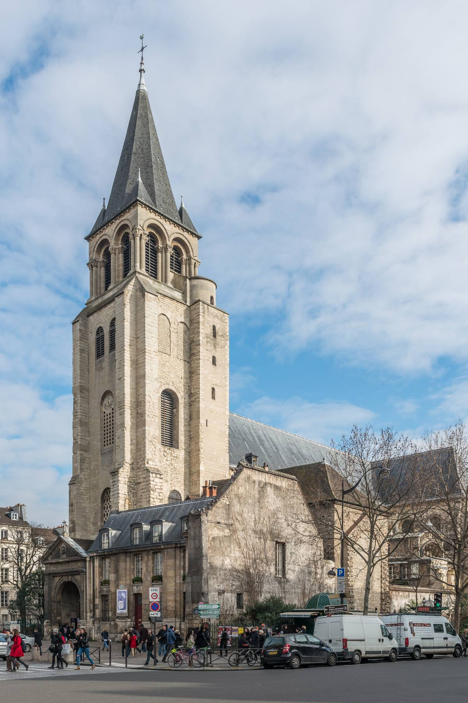

Paris is one of those cities where the worst thing you can do is move too fast. The iconic landmarks are worth every bit of their reputation, but the city gives most of itself to people who are willing to slow down and walk.
Three days is enough to get a proper feel for it. Not enough to see everything, but then nothing is. This itinerary is built around neighbourhoods rather than a checklist: each day has a geographic logic so you are always walking, rarely doubling back, and spending time where the city is actually at its best.
How Paris
is organised.
Paris is divided into 20 arrondissements, numbered 1 to 20, spiralling outward from the centre like a snail shell. The Seine runs roughly east to west through the middle, dividing the city into the Right Bank to the north and the Left Bank to the south. Most of what first-time visitors want to see sits in the central arrondissements between the 1st and the 18th.
The Metro is excellent and you will use it, but Paris is also a remarkably walkable city between many of the key areas. The distance from Notre-Dame to the Marais is about ten minutes on foot. From Saint-Germain-des-Pres to the Eiffel Tower is around 35 minutes. Once you understand the geography, a lot of unnecessary metro journeys fall away.
The Islands,
the Left Bank,
and the Louvre.
Start at Place Saint-Michel. This fountain square at the edge of the Latin Quarter is where the Stepcast Paris audio tour begins, and it is the right place to start the day: you can see the towers of Notre-Dame directly across the river, and the neighbourhood behind you contains eight centuries of student and intellectual life. Before you leave your hotel, book your timed entry for Notre-Dame and your ticket for Sainte-Chapelle: both are on the first part of the route and both sell out.
Notre-Dame entry is free but requires a timed reservation that fills up quickly. Sainte-Chapelle requires a paid ticket and sells out in summer, sometimes weeks ahead. Book both online before your visit, not on the morning you plan to go.
On the Rue de la Bucherie, just along the quay from the square, you will find Shakespeare and Company. The current bookshop was opened in 1951 by American George Whitman and named after the original run by Sylvia Beach in the 1920s, which published the first edition of James Joyce's Ulysses in 1922. The shop has hosted generations of writers who slept among the stacks in exchange for working a few hours each day. It is cramped, atmospheric, and worth the detour. Buy something.
Cross the Petit Pont to the Ile de la Cite, the island in the Seine where Paris began as a Gaulish settlement around 250 BC. Notre-Dame de Paris stands at the eastern end of the island. After the catastrophic fire in April 2019 that destroyed the spire and most of the roof, the cathedral underwent an extraordinary restoration and reopened in December 2024. It is worth the queue to go inside. The interior restoration is meticulous and the experience of being in a building that has stood here in some form since 1163 has not changed.
Walk west along the island to Sainte-Chapelle. It sits inside the courtyard of the Palais de Justice and is easy to miss if you do not know it is there. Built in 1248 to house relics acquired by King Louis IX, including what was believed to be the Crown of Thorns, it contains one of the finest Gothic interiors in the world. The upper chapel is almost entirely glass: 15 floor-to-ceiling windows, over 1,000 biblical scenes, the stone reduced to the minimum required to hold the glass in place. On a clear morning with sunlight coming through, it is one of the most extraordinary rooms in Europe.
Continue west to the Pont Neuf, the oldest bridge in Paris, completed in 1607, and cross back to the Left Bank. Walk west through the Institut de France and into Saint-Germain-des-Pres. This was the intellectual heart of post-war Europe: Sartre and Simone de Beauvoir wrote at the Cafe de Flore, Camus and Beckett were regulars, and Hemingway was here in the 1920s. The cafes are expensive and full of tourists. Go anyway. The church of Saint-Germain-des-Pres beside them is one of the oldest in Paris, founded in the 6th century, and is usually quiet inside.
Cross the Pont des Arts, the pedestrian footbridge between the Institut de France and the Louvre. Stand in the middle and look both ways along the Seine: Notre-Dame behind you to the east, the Eiffel Tower ahead in the distance to the west. There are very few better views in Paris.
End the afternoon at the Louvre. You do not need to go inside today: walk through the Cour Napoleon with the glass pyramid and take in the scale of it. For the evening, head east to the Ile Saint-Louis, the smaller island beside the Ile de la Cite, for one of the city's quietest and most atmospheric evening walks. Dinner on the island or back in the Latin Quarter.
The Stepcast Paris tour
follows Day 1's exact route.
Place Saint-Michel, Notre-Dame, Sainte-Chapelle, Saint-Germain, Pont des Arts, the Louvre. Audio commentary at every stop. Go at your own pace. First 3 stops completely free.
Try the Paris tour for free →
The Marais,
the Latin Quarter,
and the Eiffel Tower.
Start the morning in the Marais, the medieval neighbourhood stretching across the 3rd and 4th arrondissements on the Right Bank. This was the aristocratic heart of Paris in the 16th and 17th centuries. It fell into neglect after the Revolution, which is partly why so much of it survived: the grand hotels particuliers, the courtyards, the narrow medieval streets were simply too unfashionable to demolish. It was restored from the 1960s onward and is now one of the most desirable areas in the city.
Walk along the Rue des Rosiers, the historic centre of the Marais Jewish quarter, settled since the 13th century. The concentration of falafel restaurants, bookshops and delicatessens on this street reflects a history that survived, barely, through the Second World War. Paris's Jewish community was devastated during the German occupation: over 77,000 French Jews were deported, the majority from Paris, and fewer than 3,000 survived. The Marais carries that history quietly.
End the morning at the Place des Vosges. Built between 1605 and 1612 under Henri IV, it is the oldest planned square in Paris and one of the most beautiful in Europe. Thirty-six uniform red brick and stone pavilions on four sides, arcaded at ground level, with a garden and two fountains in the centre. Victor Hugo lived at number 6 for sixteen years: his apartment is now a free museum.
Take the Metro south to the Latin Quarter for the afternoon. The streets around the Sorbonne are dense with bookshops, cheap restaurants and student life that has been continuous here for 700 years. Walk uphill to the Pantheon on the Rue Soufflot. Built as a church in the 18th century and converted into a secular mausoleum during the Revolution, it holds the remains of Voltaire, Rousseau, Victor Hugo, Emile Zola, Marie Curie, and others. Curie is the only woman buried here on her own merit. The crypt is worth the entry.
The Luxembourg Gardens are a 10-minute walk from the Pantheon and are one of the finest parks in Paris. The Medici Fountain in the northeast corner of the gardens is one of the most peaceful spots in the city. Worth 30 minutes of your afternoon.
Spend the afternoon walking west toward the Eiffel Tower. The tower itself divides people and there is no correct opinion about it. What is harder to argue with is the view from the Trocadero, the esplanade on the Right Bank directly across the river. The best time to be there is around an hour before sunset: the light on the tower changes as the sky goes orange, and at the top of each hour after dark, it sparks for five minutes. The effect from across the river is considerably more striking than it is from directly beneath it.
If you want to go up, book tickets in advance. The queues without a booking are long and the wait is rarely worth it. The view from the second floor is broadly as good as the summit.

Montmartre:
the village above
the city.
Montmartre sits on a hill in the 18th arrondissement, rising sharply above the boulevards below. It feels different from the rest of Paris: narrower streets, a slower pace, actual staircases carved into the hillside, and the persistent sense that the city has not quite absorbed it. That is partly the geography and partly the history. From the 1880s through to the 1930s, Montmartre was the centre of Parisian artistic and bohemian life, home at various points to Toulouse-Lautrec, Picasso, Modigliani, Renoir, Degas and Utrillo. The rents were low, the absinthe was available, and the hill was far enough from bourgeois Paris to feel like freedom.
Take the Metro to Abbesses rather than Anvers: it puts you at the bottom of the hill in a quieter part of the neighbourhood, and the walk up through the backstreets is the best introduction to the area. The lift at Abbesses station is one of the deepest in the Paris Metro.
Sacre-Coeur
The Basilica of Sacre-Coeur at the summit was built between 1875 and 1914 as an act of national penance following France's defeat in the Franco-Prussian War. The politics of its construction were contested from the beginning, and the building is more interesting for its context than for its interior. What is unambiguously worth it is the view from the steps: the entire city laid out to the south, with the Eiffel Tower visible on clear days. Arrive early to avoid the crowds and the persistent sellers on the steps.
The village
Walk northwest from the basilica into the actual village of Montmartre. The Place du Tertre, one square back from the Sacre-Coeur, is the most tourist-dense spot in the neighbourhood: portrait artists line every side and the restaurants are overpriced. Go through rather than linger. But understand that this square has been a gathering point for artists since the 19th century, and the kitsch has not entirely erased that history.
Find the Montmartre vineyard on the Rue des Saules, one of the last working vineyards within a major European capital. The harvest in early October is celebrated with a street festival each year. The vines are small and the wine is symbolic rather than serious, but the sight of a working vineyard hemmed in by Parisian rooftops is genuinely startling.
The Moulin de la Galette, a little further along the Rue Lepic, is the last surviving windmill in Montmartre and a building that Renoir painted in 1876 in one of his most celebrated works. The painting, showing a Sunday afternoon dance beneath the trees outside the mill, now hangs in the Musee d'Orsay. The mill itself is still standing.
The Moulin Rouge is at the foot of the hill on the Boulevard de Clichy. The exterior is worth a look as you pass. Shows require advance booking and are expensive. The surrounding Pigalle neighbourhood has gentrified significantly over the past decade and has some of the best natural wine bars in the city.
The afternoon: Canal Saint-Martin
If you have energy for the afternoon, take the Metro east to the Canal Saint-Martin in the 10th arrondissement. The canal runs for 4.5 kilometres between the Seine and the Canal de l'Ourcq, lined with iron footbridges, lock gates and plane trees that overhang the water. This is the Paris that does not feature on most tourist itineraries: quieter, younger, full of independent cafes, record shops and the kind of unpolished neighbourhood life that the central arrondissements have largely priced out.
Walk the canal south toward the Republique, stopping wherever looks good. This is the one part of the itinerary with no agenda. The point is to walk slowly beside the water and understand that Paris has always been more than its monuments.
Practical things
worth knowing.

Getting there
Direct Eurostar trains run from London St Pancras to Paris Gare du Nord in around 2 hours 15 minutes. Book in advance for the best prices. From most European capitals, Paris is a short flight or, increasingly, a comfortable overnight train away.
Getting around
The Metro is fast, frequent and covers the whole city. Buy a Navigo Decouverte weekly pass if you are staying more than two days: it covers unlimited Metro, RER, bus and tram travel within the zones you need and is considerably cheaper than buying individual tickets. Load it at any Metro station. You will need a passport photo.
Velib, the city's bike share scheme, is worth using for the flatter areas. Montmartre, predictably, is not one of them.
When to go
Paris in spring, particularly April and May, is as good as the cliché suggests. Early autumn, September and October, is similarly excellent: the summer crowds thin, the light is low and warm, and the city settles back into itself. July and August are hot, crowded and expensive, and many of the best restaurants close for the month. Winter has its own logic, particularly around Christmas, but expect queues at every museum.
Eating well without spending a fortune
The lunch formule is one of the great institutions of French dining: a fixed-price two or three-course lunch at restaurants that in the evening would cost twice as much. A good neighbourhood bistrot at lunch is the best value eating in Paris. Look for a handwritten menu board outside, a room full of locals, and no photographs of food anywhere near the entrance.
Boulangeries are the best breakfast option in the city. A croissant or pain au chocolat eaten standing outside a good boulangerie at 8am costs almost nothing and is reliably better than anything a hotel will serve you.
For markets: the Marche d'Aligre in the 12th is the best everyday market in Paris, open every morning except Monday. The covered Beauvau market hall beside it is excellent for cheese, charcuterie and the kind of shopping that makes you wish you lived nearby.
Museums
The Louvre and the Musee d'Orsay are both essential and both require advance booking. For the Louvre, book a timed entry slot and arrive at your booked time: the queues for walk-ins are long at any hour. The Musee d'Orsay, housed in the former Gare d'Orsay and containing the finest collection of Impressionist painting in the world, is more manageable. Go on a weekday.
If you are visiting multiple museums, the Paris Museum Pass covers permanent collections at over 50 museums including the Louvre, the Musee d'Orsay, Versailles, Sainte-Chapelle and many others. Calculate whether it covers what you plan to see: for three full days of museum-going it almost certainly pays for itself.
The Palais Royal, one minute's walk from the Louvre, is one of the most beautiful courtyards in Paris and almost nobody knows it is there. The arcades surrounding it contain some of the oldest and most atmospheric shops and restaurants in the city. Walk through the garden, then look at the northern arcade. It is free and almost always quiet.
Your 3-day Paris
itinerary at a glance.
Walk Paris with
a guide in your pocket.
The Stepcast Paris tour covers the city's most significant landmarks with audio and written commentary at each stop. No booking, no group, no fixed start time. Go at your own pace and stop when you want. First 3 stops completely free.
Try the Paris tour for free →